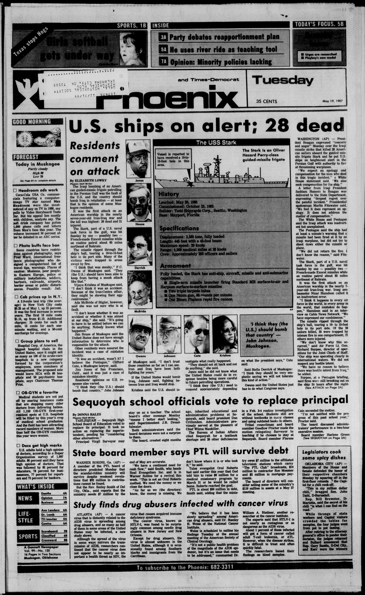

HN HN-766 · May 19, 1987 · War, Conflict & Security > Wars, Battles & Campaigns > Naval battles
USS Stark 19 May 1987 Los Angeles Times and Muskogee Daily Phoenix: 28 dead; Washington Post 19 May dispatch/20 May archive: 37 dead or presumed dead.
Source: Banner-Graphic, p. 2 — original page; U.S. Navy historical account.
Report: After an Iraqi warplane's missile attack on USS Stark in the Persian Gulf, the Pentagon increased the death toll from 28 to 37; 22 bodies had been identified and 15 sailors were missing and presumed dead.
Assessment: A documented early count correction; 37 is also the Navy's historical total. Missing/presumed dead and recovered/identified were different classifications at the time. The attack was by an Iraqi, not Iranian, aircraft.
Class: Printed differences (V)
Recorded difference/concern: USS Stark 19 May 1987 Los Angeles Times and Muskogee Daily Phoenix: 28 dead; Washington Post 19 May dispatch/20 May archive: 37 dead or presumed dead.
Assessment: A documented upward revision; 37 includes presumed dead, status difference matters.
Source links: https://www.washingtonpost.com/archive/politics/1987/05/20/admiral-tells-of-surprise-aboard-stark/6ff23764-b235-45a2-ac3a-0c8fa92b5372/ https://www.latimes.com/archives/la-xpm-1987-05-19-mn-1158-story.html https://gateway.okhistory.org/ark:/67531/metadc2642563/m1/1/
Authentic scans retrieved from Gateway to Oklahoma History (Oklahoma Historical Society). Article crops are located using the archive's own OCR word coordinates and rendered at native crop resolution; page scans are reduced-size access renditions. No images were generated, mocked, or retouched.

Not yet acquired. Queued for provider-specific acquisition testing (see source-acquisition manifest).
URL (preserved verbatim): https://newspapers.library.in.gov/?a=d&d=BG19870519.1.2
Saved research report: Historical_Newspaper_Event_Research_753-777_2026-10-23.md
Evidence note: A newspaper report means a historical publication made a claim; it does not establish that claim as fact. Contemporary reporting is separated from later scholarly context and our own assessment.